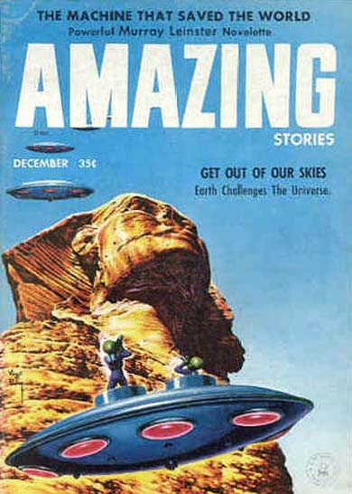

Couverture de Fate ce mois-ci
À Los Angeles (Californie), photographie d'une formation d'ovnis ovales UFO Evidence, NICAP, VIII.
Une année après son observation d'ovni arrangée par un étranger qui était entrée dans son
magasin du Bedfordshire (Angleterre), ce dernier refait son apparition. Cette fois
Whitworth amène un convoi de journalistes avec lui à l'endroit convenu. Rien. Un appel anonyme explique qu'il
n'aurait pas dû amener toute une foule Kottmeyer, Martin S.: "Still Waiting: A List of Predictions from the 'UFO Culture'", The Anomalist, 1998.
A Cobalt (Ontario, Canada), Cat. 3. Friture sur la radio alors que plusieurs ovnis
sont vus dans les environs.
Près d'Ellensburg (Washington), Cat. 3. Un moteur de camion "s'arrête presque",
caught again, alors qu'un ovni est observé. Observation confirmée par la police.
et Des F-86 A Sabre équipés de 6 caméras filment 16
engins de 50 x 10 m, en formation en "V". 2 autres approches sont filmées.
Près de Coulee City (Washington), Cat. 3. Des automobiles
calent, leurs phares clignotent et s'éteignent, alors qu'un grand phénomène flamboyant passe au-dessus d'elles.
A Guthrie (Pennsylvanie) et Parkersburg (Virginie occidentale)Blue Book Unknowns des
pilotes de l'USAF de 3 F-86 avec le 87ème Escadron de Chasseurs voit 1 phénomène orange circulaire ou
en forme de croissant se déplacer de manière erratique à Mach 1,5 (près de 1000 miles/h) sans être repéré au
radar Project 1947McDonald list.
Lake City AFS (Tennessee)Blue Book UnknownsMcDonald list.
Couverture de Amazing Stories ce mois-là, montrant de "petits hommes verts" sortant d'une soucoupe, et titrant sur
"Sortez de notre ciel"

A Chatham (Windsor, Canada), un pilote de Trans-Canada Airlines et de
nombreux policiers voient un ovale orange faisant une courbe rapidement à basse altitude UFO Evidence, X.
À Misawa Chitose (Hokkaido, Japon)Blue Book Unknowns observation radar-visuelle d'un ovni aux couleurs variables. Des avions
de chasse sont envoyés UFO Evidence, VIIIMcDonald listFUFOR Index.
À Col Anahuac (Mexique), R. C. Cano voit durant 20 mn 14 ou 15 disques effilés et très brillants voler en formation,
d'abord comme une pile de pièces de monnaie, puis changer en une formation en "V" inversée Cas Blue
Book n° 5545 non résolu < Berliner, D.Hynek UFO Rpt. p. 120.
À Old Saybrook (Connecticut), ovni elliptique avec "ouvertures"
UFO Evidence, XII.
À Fruita près de Grand Junction (Colorado), F. G. Hickman (17 ans) voit 1 objet rond passer du jaune au blanc puis au rouge ; sa queue
est 2 fois plus longue que son corps. Il s'arrête, redémarre, recule durant 45 mn Cas Blue
Book n° 5559 non résolu < Berliner, D..
À Sarasota (Floride), Cat. 3. survol par une source lumineuse
blanche, interférences TV remarquées.
À la base aérienne de Pepperrell (Newfoundland, Canada)Blue Book UnknownsMcDonald list.
En mer du Japon Blue Book UnknownsMcDonald listFUFOR Index.
Dans l'Océan Pacifique, photographie d'un supposé ovni en forme de disque UFO Evidence, NICAP, VIII.
2ème quinzaine du moisEntre Royère et Bourganeuf (Creuse), 1 automobiliste aperçoit 1 lueur orangée semblable à
celle d'un phare de motocyclette, mais dans le ciel, de la taille de la pleine Lune. En une fraction de seconde,
cette boule fond sur lui et il est environné d'une lueur orangée extrêmement intense rendant dérisoires les phares
de sa voiture. Il est ainsi suivi sur plus de 10 km, le phénomène s'éloignant ou se rapprochant à une vitesse
pratiquement infinie, et cela malgré les difficultés du parcours. Dès les premières maisons de Bourganeuf,
il voit disparaître une sorte de disque plat, bombé au milieu, très orangé et parfaitement silencieux, suivant la
même direction et à une vitesse très élevée Marey, George: "Dans notre ciel et sur notre sol" in "Soucoupes Volantes", Forces Aériennes Françaises (revue Mensuelle
de l'Armée de l'Air) n° 245, mars 1968.